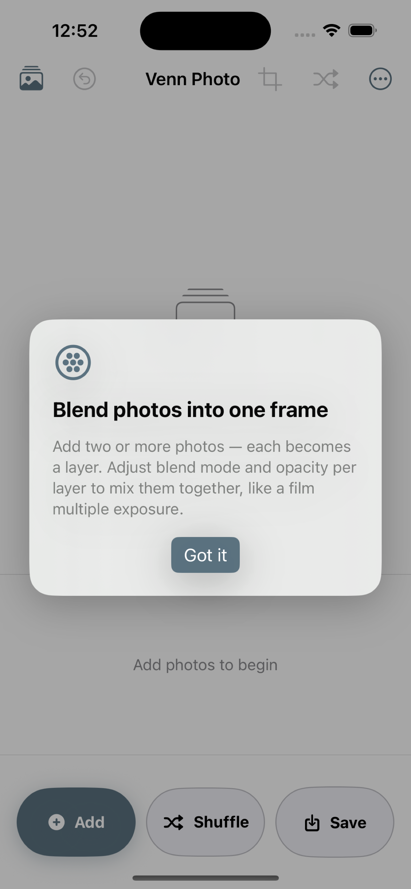
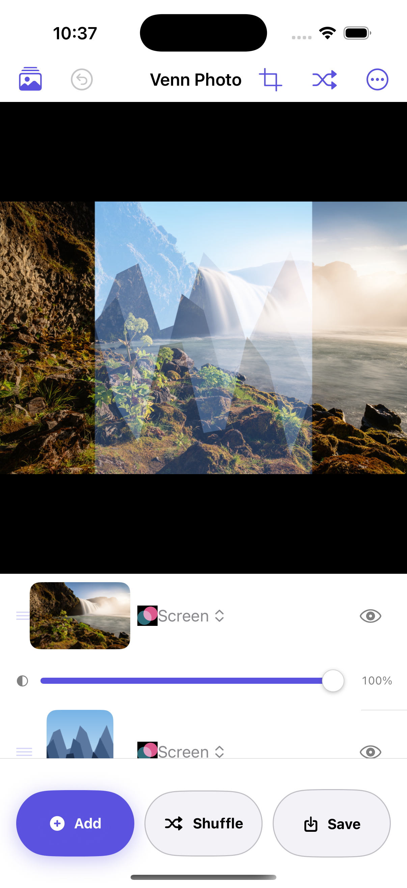
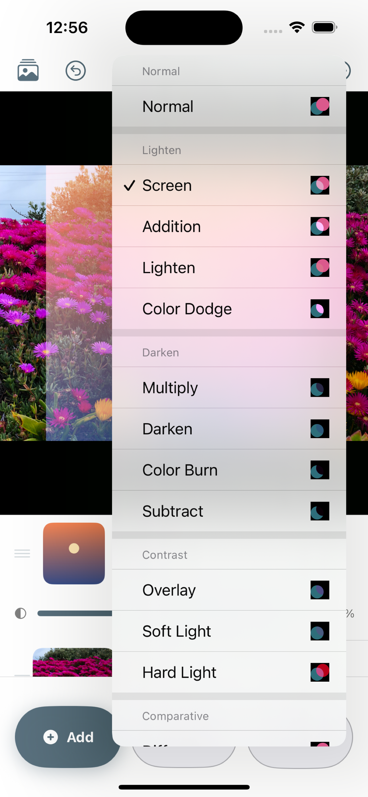
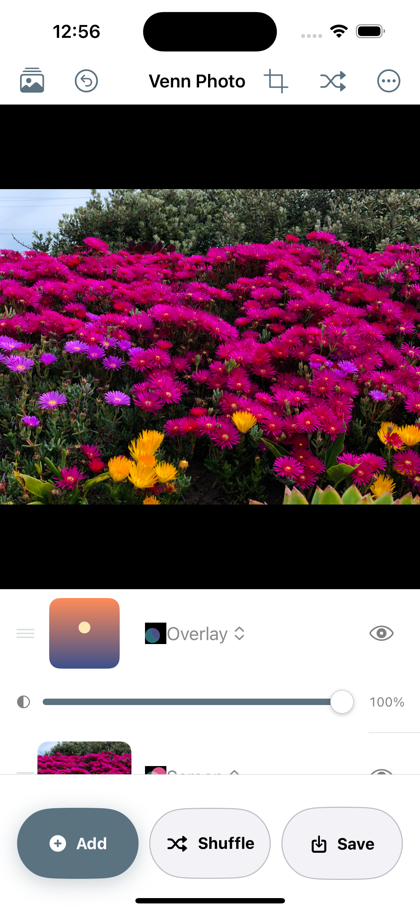
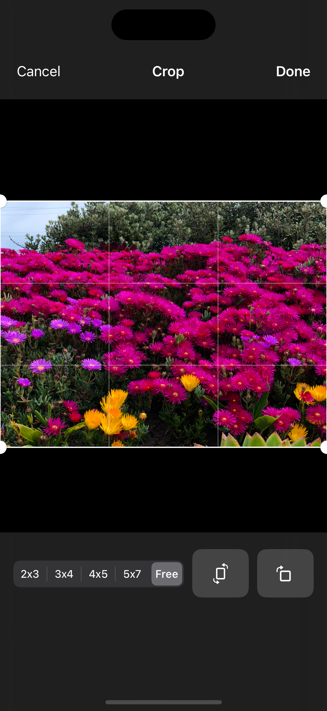
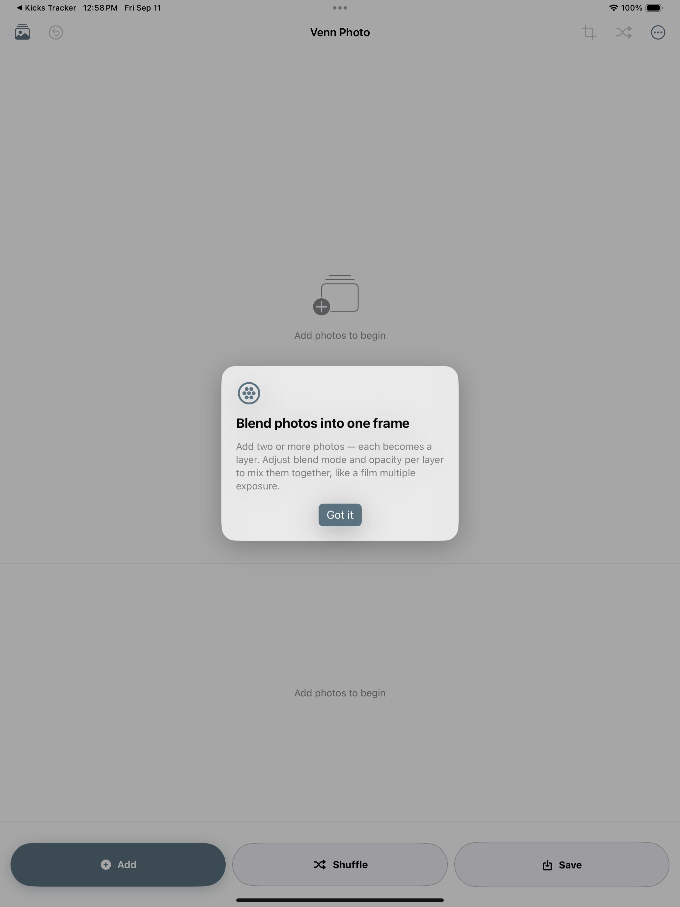
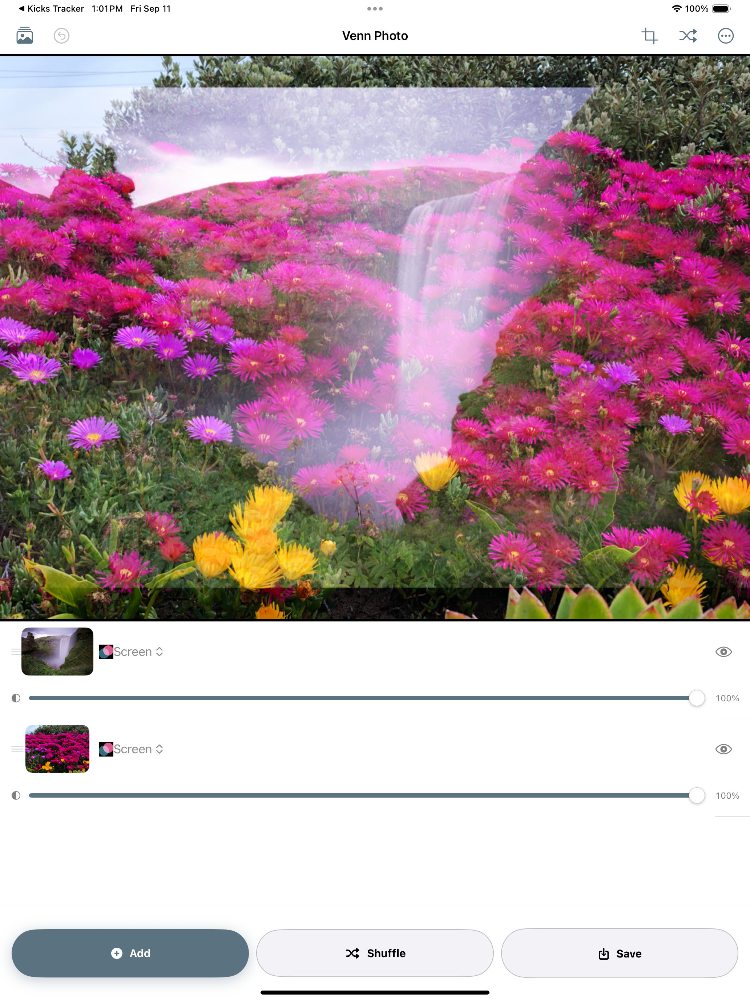
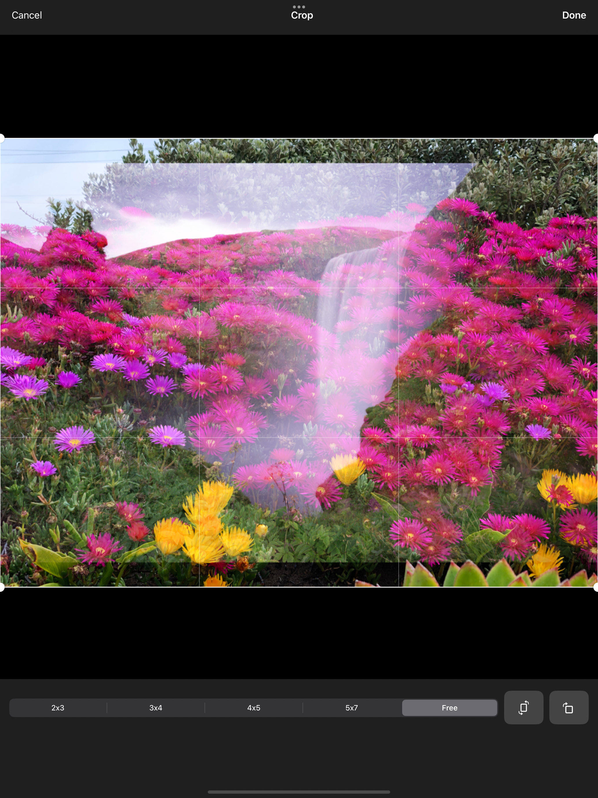
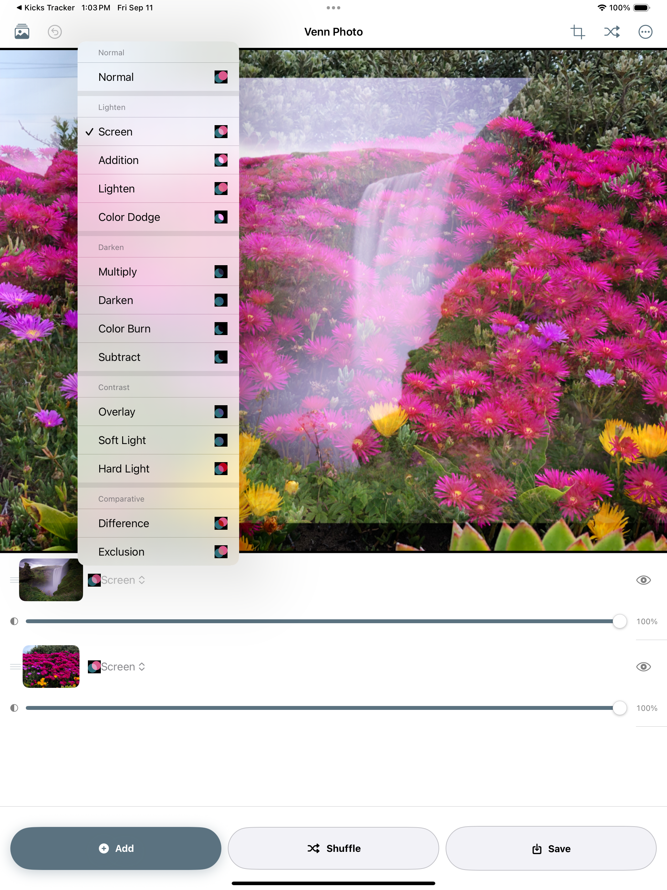
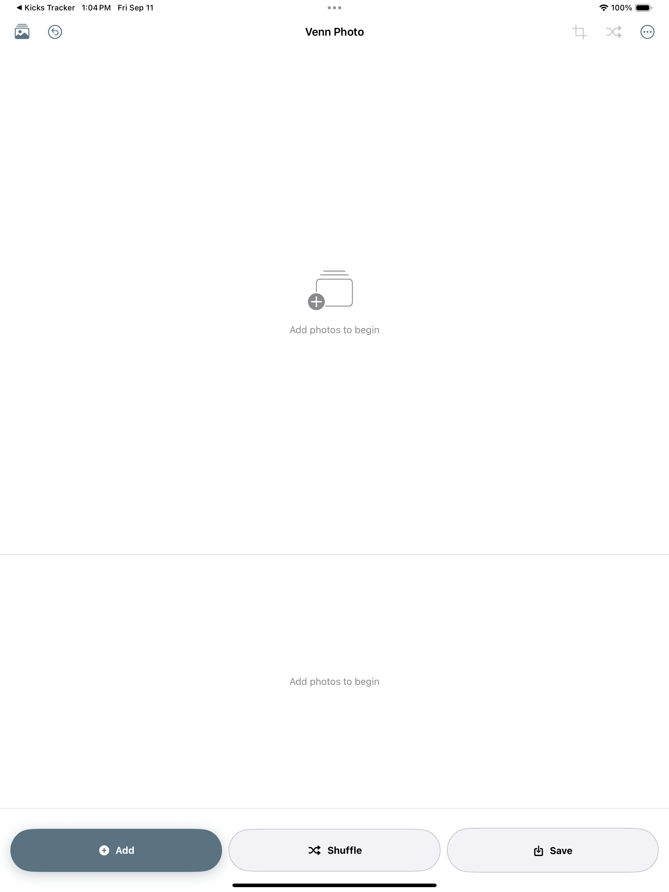

Venn Photo
Double exposures done properly — real blend modes, real layers, full-resolution export.
Double exposures done properly — real blend modes, real layers, full-resolution export.
Venn Photo is a multi-exposure photo compositor. Stack photos as layers, choose how each one blends into the ones below, and export the composite at full resolution. Everything happens on-device, and every export lands in its own Venn Photo album alongside a built-in gallery of what you've made.
iPhone





iPad





Screen, multiply, overlay, soft & hard light, difference, color dodge & burn, and more.
Reorder layers, toggle visibility, and adjust opacity, position, and scale on each one independently.
JPEG, TIFF, or HEIF — TIFF for anyone printing or finishing the edit in Lightroom or Photoshop.
Layers hold encoded data, not decoded pixels, so full-resolution export isn't bounded by layer count.
Keep Exploring
Back to the full app portfolio